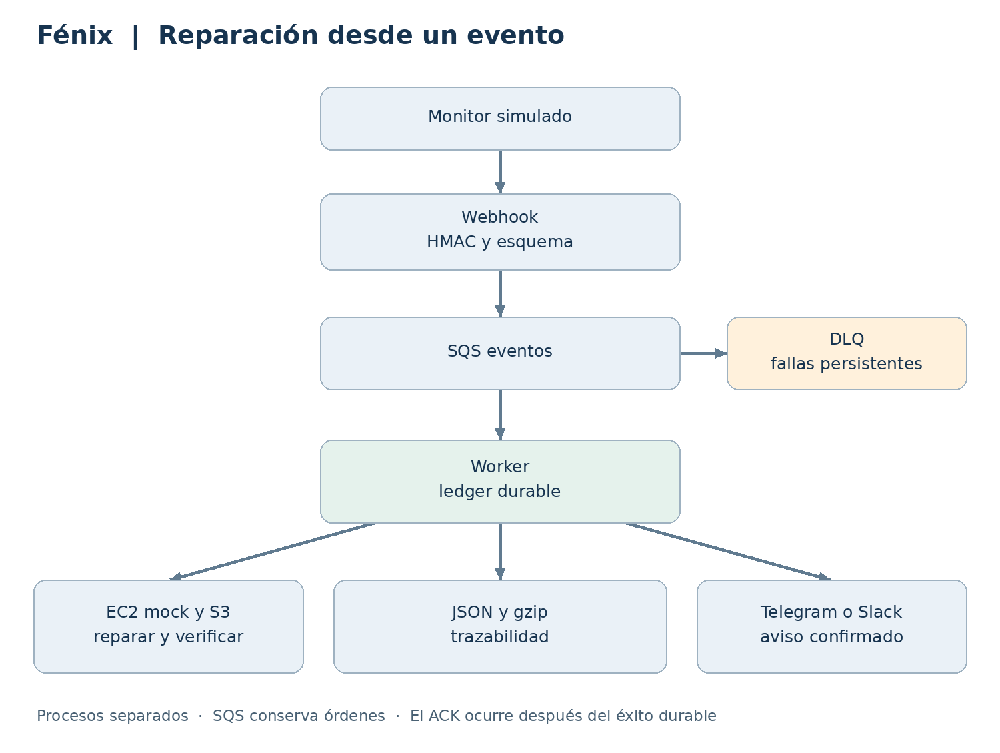
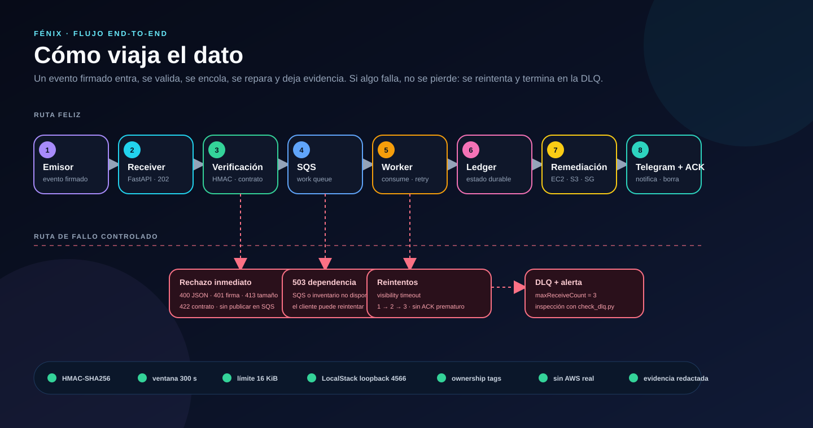
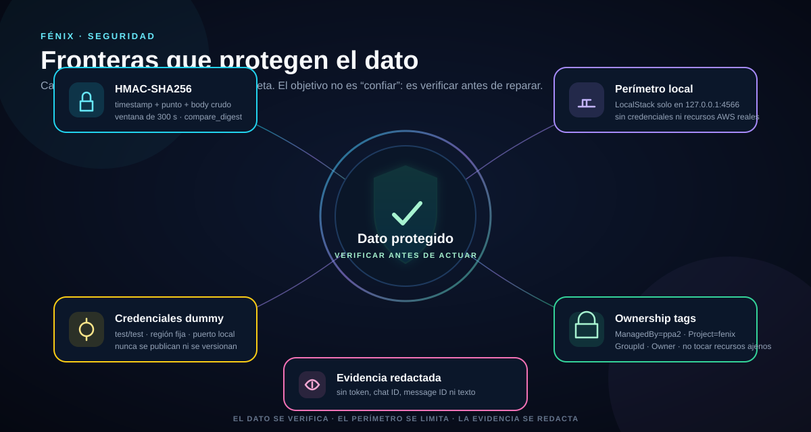

El emisor firma
El cliente firma los bytes exactos del evento con HMAC-SHA256. La firma no protege un JSON re-serializado: protege lo que realmente se envía.
t=<epoch>,v1=<64 hex>Fénix · autorreparación local de infraestructura
Un evento firmado entra por el webhook, se valida, se encola y despierta a un worker. El worker repara solo los recursos que le pertenecen, guarda evidencia y avisa por Telegram. Si algo falla, el mensaje no se pierde: se reintenta y termina en una DLQ.

01 · El recorrido
La idea central es simple: primero se verifica, después se actúa. Cada etapa tiene una responsabilidad y una evidencia. Si una etapa falla, la siguiente no inventa un resultado.

El cliente firma los bytes exactos del evento con HMAC-SHA256. La firma no protege un JSON re-serializado: protege lo que realmente se envía.
t=<epoch>,v1=<64 hex>POST /webhook aplica el límite de 16 KiB, rechaza encabezados ambiguos y no confía en el cuerpo hasta autenticarlo.
La firma cubre timestamp + "." + body crudo. La ventana es de 300 segundos y la comparación usa compare_digest.
El JSON debe ser un objeto cerrado. El alias debe existir en el inventario y simulate_failures debe ser un entero de 0 a 5.
Si SQS confirma la publicación, el receiver responde 202 con status, event_id y message_id. La cola es estándar, con visibilidad de 45 s.
El worker procesa un mensaje por recepción. Si falla, conserva el mensaje y ajusta su visibilidad; nunca hace ACK de un trabajo incompleto.
backoff min(30, 2^attempt)data/events.json se reemplaza de forma atómica. Guarda intentos, reparación, notificación, estado y conflictos para reanudar sin repetir etapas completas.
EC2 solo inicia una instancia detenida y verifica que quede running. S3 combina etiquetas esperadas, conserva las no relacionadas y relee para verificar.
La notificación se envía después de la reparación. Los errores 429 o 5xx se reintentan con espera acotada; el proveedor puede aceptar un duplicado si el proceso cae justo después.
sendMessage · evidencia redactadaSolo cuando reparación y notificación están durables se borra el mensaje con el ReceiptHandle vigente. Un conflicto de event_id no se repara y termina en la DLQ.
02 · Las piezas
Esta es la vista para explicar el repositorio sin perderse: qué hace cada módulo, dónde vive y qué conviene decir en clase.
Recibe el webhook, autentica la firma, valida el contrato y publica en SQS. Es la frontera entre “algo llegó” y “algo es aceptable”.
src/fenix/services/receiver.pyDefine el JSON cerrado, los tipos de evento y la resolución del alias al recurso real. El webhook nunca recibe IDs de nube.
src/fenix/services/events.pyDesacopla la recepción del procesamiento. La cola de trabajo redirige a la DLQ después de tres recepciones fallidas.
src/fenix/services/sqs.pyOrquesta el procesamiento: lee, registra intentos, decide ACK o reintento y no borra mensajes que todavía no terminaron.
src/fenix/services/worker.pyRepara EC2 y S3 de forma convergente. Antes de tocar un recurso comprueba pertenencia y etiquetas; después relee el estado.
src/fenix/services/remediation.pyPersiste el estado por evento con reemplazo atómico. Permite reanudar una notificación o reparación sin repetir lo ya confirmado.
src/fenix/utils/state.pyAdaptador de Telegram con metadatos de confirmación. La evidencia real se captura por separado y se redacta antes de publicarse.
src/fenix/services/notifications.pyLogs JSON con contexto UTC, rotación y compresión gzip. La evidencia debe poder leerse sin filtrar secretos.
src/fenix/utils/logging_json.pyPrepara colas y recursos, provoca fallos controlados, firma y envía eventos, y ejecuta el worker una vez para la demostración.
src/fenix/cli.py · services/demo.py03 · Los contratos
Los ejemplos son sintéticos. La página no publica credenciales, IDs reales de cuenta ni contenido de mensajes.
Objeto JSON cerrado. El alias se resuelve contra el inventario; no se aceptan IDs de nube en el cuerpo.
{
"schema_version": 1,
"event_id": "evt-node-001",
"event_type": "instance.stopped",
"resource_id": "node-01",
"occurred_at": "2026-10-22T18:00:00Z",
"simulate_failures": 0
}El alias apunta al recurso y a sus etiquetas esperadas. La pertenencia se verifica antes de reparar.
{
"node-01": {
"type": "ec2",
"id": "i-example",
"group_id": "grupo-01",
"expected_tags": {
"ManagedBy": "ppa2",
"Project": "fenix",
"GroupId": "grupo-01",
"Owner": "grupo-01"
}
}
}El estado durable permite reanudar. La repetición de un event_id con contenido distinto se registra como conflicto.
{
"evt-node-001": {
"attempts": 1,
"repair_done": true,
"repair_result": "repaired",
"notified": true,
"status": "complete",
"conflicts": []
}
}| Respuesta | Qué significa | Qué debe entender la audiencia |
|---|---|---|
| 202 | SQS confirmó la publicación. | El receiver aceptó el evento; el trabajo todavía no terminó. |
| 400 | El cuerpo no es UTF-8 o no es JSON válido. | No se publica nada en la cola. |
| 401 | Firma faltante, duplicada, inválida o fuera de la ventana. | La autenticación se resuelve antes de interpretar el cuerpo. |
| 413 | El cuerpo supera los 16 KiB. | El límite protege memoria y superficie de ataque. |
| 422 | JSON válido, contrato o inventario inválido. | La forma es correcta; el contenido no es aceptable. |
| 503 | Inventario o SQS no disponibles. | El receiver no afirma haber aceptado el evento. |
04 · Los límites
La confianza no se declara: se comprueba. Estos controles son los que permiten decir que el sistema no repara cualquier cosa que encuentre.

El HMAC cubre timestamp, punto y cuerpo original. Re-serializar el JSON cambia los bytes y debe fallar. La ventana de 300 s limita replay.
El entorno aprobado usa 127.0.0.1:4566, credenciales dummy y servicios SQS, S3 y EC2 emulados. No hay llamadas a AWS reales.
EC2 y S3 deben coincidir con ManagedBy=ppa2, Project=fenix, GroupId y Owner. Un recurso ajeno no se toca.
La captura real de Telegram confirma ok: true, pero omite token, chat ID, URL del Bot API, message ID y texto del mensaje.
| Fallo | Qué hace el sistema | Qué demuestra |
|---|---|---|
| Firma inválida | 401 y cero publicaciones. | La autenticación ocurre antes de la lógica de negocio. |
| Mensaje corrupto | El worker no lo ACKea; SQS lo mueve a la DLQ tras tres recepciones. | Un mensaje problemático no frena al worker ni se pierde. |
| Fallo persistente | Sin reparación y sin ACK; el mensaje llega a la DLQ real. | La aplicación no finge éxito cuando no puede completar. |
| Conflicto de event_id | Conserva el primer contenido, registra el conflicto y no repara otra vez. | La idempotencia se apoya en el ledger, no en la memoria. |
| Telegram 429 o 5xx | Reintenta solo la notificación con espera acotada. | Una reparación confirmada no se repite por un fallo de mensajería. |
| Reset de LocalStack | La configuración y la demo se vuelven a preparar; el sistema converge. | El entorno es reproducible y no depende de estado oculto. |
05 · La clase
Una secuencia para contar el proyecto sin leer código línea por línea: problema, recorrido, contratos, fallos y evidencia.
“Una instancia se cae. El sistema se entera, se protege, repara y deja evidencia. Si no puede, no finge éxito.”
Muestra la imagen base y ubica los tres límites: receiver, cola y worker. El resto son consecuencias.
Explica HMAC sobre bytes crudos, ventana de 300 s y por qué un 401 no publica nada.
El webhook solo acepta alias, no IDs de nube. Un campo extra o un tipo inválido termina en 422.
La cola desacopla. Tres recepciones fallidas llevan a la DLQ; el worker nunca ACKea un fallo.
Muestra cómo se reanuda una etapa durable y cómo EC2/S3 se reparan solo si pertenecen al grupo.
Prepara, provoca el fallo, envía, ejecuta el worker y muestra el ledger completo y la notificación.
Muestra la DLQ y la captura redactada de Telegram. La evidencia no publica secretos.
No hay transacción distribuida ni exactamente una vez. El ledger reduce duplicados; no los elimina por completo.
“Primero verificar, después reparar; si no se puede, dejar rastro y fallar de forma visible.”
06 · Publicación
El sitio vive en docs/ y no necesita build. El archivo .nojekyll evita que GitHub lo procese como Jekyll.
docs/ a la rama main.https://<usuario>.github.io/Sistema-de-Autorreparacion-de-Infraestructura/
No subas .env, tokens, chat IDs, IDs de cuenta ni capturas sin redactar. La página es pública.
README.md, evidencias/matriz-verificacion.md y los logs de evidencias/ejecuciones/.